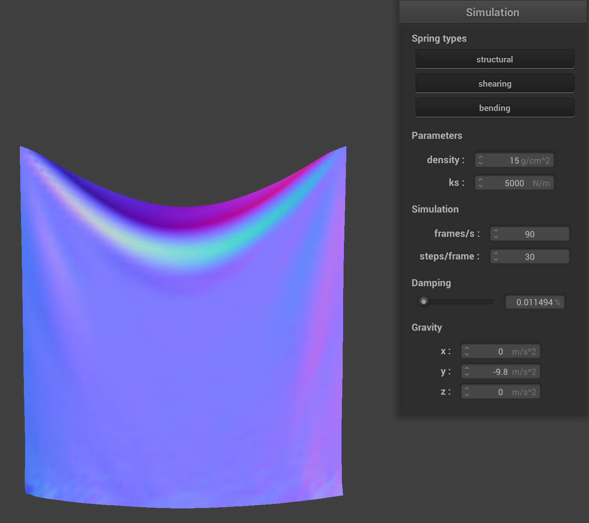
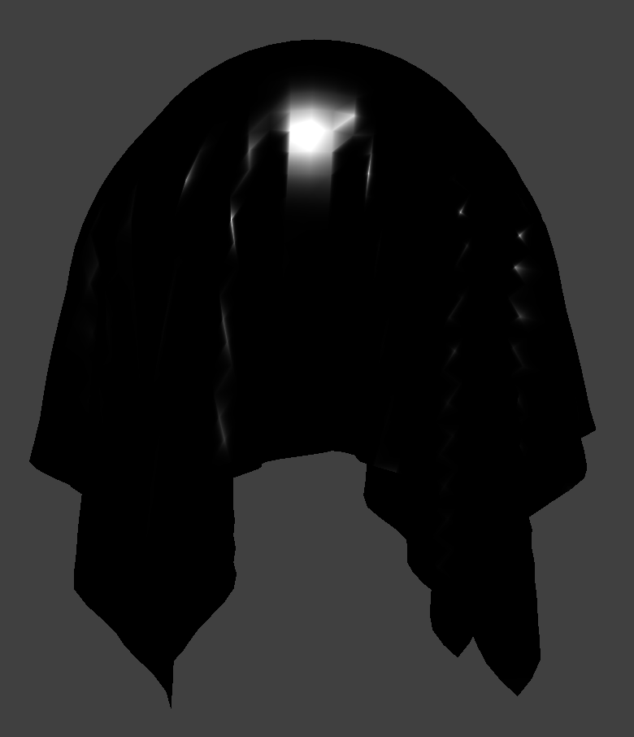

CS 184: Computer Graphics and Imaging, Spring 2024
Homework 4: Cloth Simulator
Grace Liu and Alex Gao
Website URL: https://cal-cs184-student.github.io/hw-webpages-sp24-agao25/
Overview:
In this homework assignment, we implemented a simple mass and spring system for representation of objects in simulation, constrained and defined ways for objects (mainly a cloth) to behave over time, dealt with self-intersections and collisions with other objects, and created various ways to display our objects via shader program files. This project was somewhat tough to understand initially as it wasn’t initially very clear to us how a simple grid of points was going to contribute to visible surfaces. Especially with the math and equations later on, revisiting the project path and conceptual ideas of each part allowed us to better visualize our end results. Working with the .vert and .frag files was quite annoying because bugs and issues in these files were not immediately clear to us without any interactive error displays. This made debugging a little more painful and time consuming, but working with C in a very practical way was cool. The shader programs really showed us how much more there is in the world of optimizing graphics and finding other ways to produce complicated images. The simulations we created were really interesting and as we messed around with the settings, definitely gave us some inspiration for our final project.
Part 1: Masses and springs
In part 1, we implemented a cloth model via a system of point masses and springs. This model treats the cloth as a bunch of evenly spaced point masses connected by mechanisms that act like springs. To start, we need to define our grid of point masses. We did this by double “for” looping through the number of width and height points given to us, and defining some of their coordinates based on their orientation (horizontal or vertical). All of these defined point masses were then stored in the point_masses vector in x-axis order (as specified in the spec). To connect these point masses, we also needed to loop through all the points and define springs. Springs require a pointer on each end to a point mass, and according to the spec, we specified the orientation of springs based on whether they were a structural, shearing, or bending constraint. Each created spring was then stored onto the springs vector.
Screenshots of scene/pinned2.json
Wireframe without any shearing constraints
Wireframe with only shearing constraints
Wireframe with all constraints
Part 2: Simulation via Numerical Integration
Low ks (ks = 1 N/m) |
High ks (ks = 100000 N/m) |
Both cloths still fall normally from top to bottom, but the main difference is in the amount of sag in the cloth between the 2 pinned points. With a low ks, there is significantly more noticeable sag in the cloth in its final state than with a high ks. A low ks means the spring is less stiff and is contributing less resistance to the gravitational force on the weight of the cloth. A high ks means there is more resistance and the cloth is able to stay more together.
Low density (density = 0.1 g/cm^2) | High density (density = 1000 g/cm^2) |
The cloths fall down at roughly the same speed and density seems to also affect the sag in the cloths. With a low density, the cloth seems to have very little sag while a high density seems to accentuate the sag. This result is likely because density affects the mass of the cloth, which when considering the interaction with the spring force, may cause the visual differences seen. Heavier mass in the cloth will cause the middle to have a greater moment and cause the sagging downwards we see. Meanwhile the smaller density has less gravitational force pulling the cloth down and thus less sag.
Low damping (~.0115%) | High damping (1%) |
Differences in damping result in somewhat similar end results, but very different start states. The low damping cloth falls down very quickly and the cloth actually swings back and forth many times before somewhat settling. It also looks like the sag in the cloth is slightly folding over itself. Meanwhile, the cloth with high damping is very slow to fall down but seems to immediately enter its final state with some sag in the cloth. The amount of damping translates to how much energy is neutralized in the system from movement of the cloth falling downwards. This is why the cloth falls so quickly with little damping since all the energy is preserved and the cloth is able to just collapse. A very high damping will significantly slow down the fall of the cloth.
Default ks = 5000 N/m, density = 15 g/cm^2, damping = 0.2 |
ks = 1 N/m, density = 1000 g/cm^2, damping = 0.023
Low ks and high density ensure noticeable sag in the cloth, low damping results in the cloth taking a while to settle |
Density = 0.1 g/cm^2
Having a low density seems to ensure a very little amount of sag in the cloth in between the pinned points |
Density = 0.1 g/cm^2, ks = 10000 N/m
The cloth is so stiff it doesn’t really settle, but the area between the pinned points has no sag. |
Scene/pinned4.json with default parameters
Part 3: Handling collisions with other objects
In part 3, we began to handle collision of our cloth with other objects. Namely, we implemented methods for colliding with a sphere and a plane as seen below. For spheres, we compute the difference vector between a point mass’s position and the sphere’s origin. Based on the direction of the difference vector and the distance between the point mass and the sphere’s surface, we can calculate a correction vector that when scaled by a friction factor and then applied to the point mass’s position, will “bump” it back to at least the surface of the sphere. For planes, we implemented a very similar method using a correction vector, but also utilized a surface_offset value for the tiny displacement as the object might move above and below a plane. The plane collision method would “bump” point masses back to the plane if it crossed sides.
ks = 5000 |
ks = 500 |
ks = 50000 |
Compared to the default of ks = 5000, the cloth when ks = 500 seems to settle into a final state a little lower than the default. Nothing super noticeable, but the cloth also seems to fold on itself a little more. As for the cloth when ks = 50000, it’s very noticeable how the cloth doesn’t fold on itself as much. After a bit of time, the cloth when ks = 50000 actually slipped off the sphere entirely. As mentioned in part 2, the spring constant is a determining factor in the general stiffness of the object. A low constant means there is less resistance and thus we can see more self folding and creasing. The high constant poses a lot of opposition to creasing with high spring force opposing the weight of the cloth.
Cloth on plane
Part 4: Handling self-collisions
Start of cloth falling | Cloth starting to fold on itself | Cloth at a more restful final state |
Low density (density = 1 g/cm^2) | High density (density = 10000 g/cm^2) |
With a low density, the cloth resolves self-collision very quickly and the cloth just has a few folds. But with high density, the cloth folds on itself a lot more and isn’t really able to enter a more restful final state. At a higher density, the cloth also is not able to “unfold” itself as much. Low density means every part of the cloth is less resistant to each other and is able to flatten itself more effectively. High density means each part of the cloth is able to oppose each other’s spring force more and so it’s hard to settle.
Low ks (ks = 10 N/m) | High ks (ks = 10000 N/m) |
With a low ks, the cloth folds over itself a lot and isn’t really able to resolve itself to a restful final state. It tries to slowly unfold itself but not very successful. Meanwhile, a high ks seems to allow the cloth to have less self folding and reach a calm final steady state much faster. Less spring constant means less resistance to bending and thus more creasing. Meanwhile high spring constant means more internal resistance due to spring forces and less creasing to do more stiffness.
Part 5: Cloth Sim
As we try to render various pictures, we need to implement various shader programs to properly guide the graphics pipeline in translating 3D scenes into 2D representations. Shader programs are isolated programs that allow us to speed up our image rendering by calculating levels of light, darkness, and color in a scene for translated display, and are actually running simultaneously on GPU. For this project, we implemented two kinds of OpenGL shaders in C, namely vertex shaders and fragment shaders. Vertex shaders apply transformations (with matrix operations) on vertices and adjust their positions and respective normal vectors. For us, these were implemented in our .vert files as we captured all these into the final gl_Position. With all the rasterization done and points defined, our fragment shaders process fragments and sections of our model to give them a color or respective texture. There may also be geometric components from the vertex shaders that are incorporated into the value returned in out_color. For us, we dealt with fragment shaders in our .frag files. Thus, in order to have a shader program, we need to create and connect a vertex and fragment shader. The vertex shader does all of the geometrical processing and realignment, and then that information is fed into the fragment shaders which return us the proper colors and textures in our visual display/simulation/image/etc.
Blinn-Phong shading is a model that consists of a few types of shading combined, namely ambient, diffuse, and specular. This allows us to get a more accurate depiction of lighting as a result of various material/lighting interactions. The ambient model defines some lighting for us based on some constant values we provide. The diffuse model captures lighting regardless of the view direction. The specular model consists of a “bisector” vector that is halfway between the view (camera direction) and the light direction that captures lighting for each vertex as it is processed through the graphics pipeline.
Blinn-Phong shader - only ambient component (ka = 0.1, Ia = 1) | Blinn-Phong shader - only diffuse component |
Blinn-Phong shader - only specular component (p = 50.0) | Blinn-Phong shader - entire model |
Custom Texture Mapping Shader
Bump Mapping on the Cloth | Bump Mapping on the Sphere | Bump Mapping after simulation played |
Displacement Mapping on the Cloth (normal = 100, height = 0.01) | Displacement Mapping on the Sphere (normal = 100, height = 0.01) | 
Displacement Mapping after simulation played (normal = 100, height = 0.01) |
Bump mapping produces some generally smooth objects as seen in the renders. It does a good job capturing the texture/data provided by our custom texture file. Displacement mapping seems to also capture and display this data well, but it changes the surface of the sphere a bit. Displacement mapping is almost accentuating the text/shapes in our texture and making them “pop out” a little bit more. This is not as noticeable in the cloth, but in the sphere and post-simulation renders, it is much more evident. The sphere doesn’t quite look like a smooth sphere, and the post-simulation is a bit more wrinkly and complex in how the cloth falls down from the sphere. The displacement mapping can definitely be brought down based on our normal and height inputs though.
Bump Mapping with coarseness -o 16 -a 16 | Bump Mapping with coarseness -o 128 -a 128 |
Displacement Mapping with coarseness -o 16 -a 16 (normal = 100, height = 0.01) | Displacement Mapping with coarseness -o 128 -a 128 |
The difference in coarseness manifested in very little difference in bump mapping between the spheres. The -o 128 -a 128 might be a little more detailed. However, there is a very noticeable difference in the spheres when looking at displacement. With -o 16 -a 16, the surface is a bit smoother albeit the sphere doesn’t quite look like a sphere with the texture wrapping around. Looking at the -o 128 -a 128 case though, the features of the texture are very much more pronounced and make the object a lot less smooth. It almost seems like some of the text is protruding a little bit from the sphere. This might be because of our specific texture wrapping around the sphere though and the constants we used. At lower height numbers, it seems generally smoother than bump mapping. 
normal = 100, height = 0.05
Mirror Shader on the Cloth | Mirror Shader on the Sphere |
Mirror Shader after simulation played |
Contributions
Grace Liu worked on part 1, part 2, part 3, part 4.2 & 4.3, part 5.2 & 5.4. Alex Gao worked on part 2.1, part 4.1 & 4.2, part 5.1, 5.3 & 5.5, and write-up.